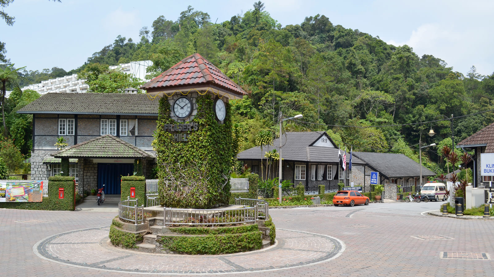
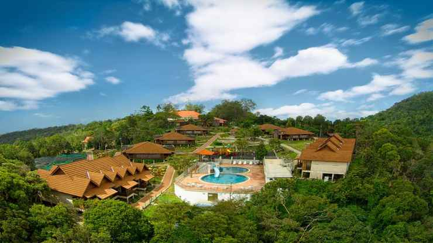

Pahang is among the more diverse states in Malaysia, offering highlands, beaches and islands. Cameron Highlands sits at approximately 1,200 metres (3,937 feet) above sea level. Temperatures hover in the low 20s (Celsius) and high 60s or low 70s (Fahrenheit), with terraced tea plantations sprawling across the forested mountains. Visitors can hike to waterfalls, pick strawberries and indulge in English-style afternoon tea. Head a little deeper into Pahang to Taman Negara (National Park). This 130-million-year-old rainforest features the world’s longest canopy walk and Mount Tahan (West Malaysia’s tallest and toughest peak). Click here to find out how to travel to Taman Negara. Beach-lovers can escape the tourists along state capital Kuantan’s east coast resorts, or travel to the palm-fringed, white-sand Tioman Island for a romantic getaway.
The Cameron Highlands is a district in Pahang, Malaysia occupying an area of 712.18 square kilometres. To the north, its boundary touches that of Kelantan; to the west, it shares part of its border with Perak

Fraser's Hill
Fraser’s Hill is a mountain village in Pahang, Peninsular Malaysia, known for its highland rainforest and extensive birdlife. Several nature paths, including Pine Tree Trail and Bishop Trail, cross jungle terrain sheltering migratory birds like the Siberian thrush. The area also harbors Malayan tigers and rare trig oak trees. Near the village is the Jeriau Waterfall. Paddle boats traverse calm Allan’s Water Lake.

Gunung Jerai
Mount Jerai, formerly Kedah Peak, is a mountain in Kedah, Malaysia with the height of 3,854 feet. Within Kedah itself, the mountain stands at the border of Kuala Muda and Yan districts. The mountain is a massive limestone outcrop and is a lone feature from the surrounding geography of the area.